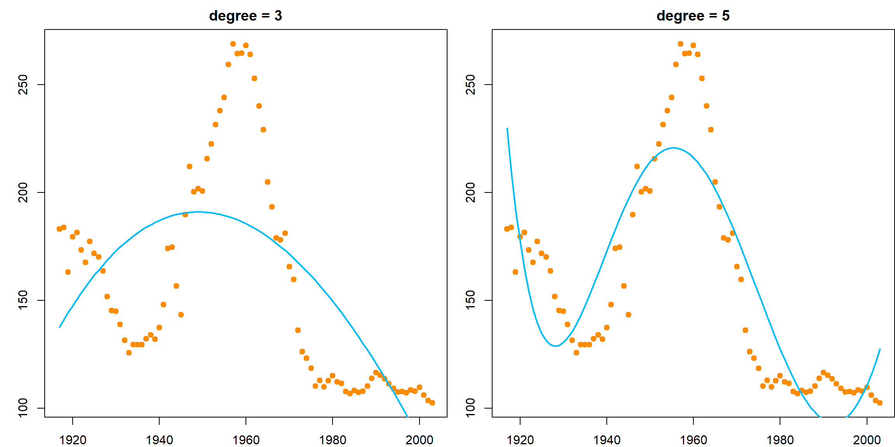
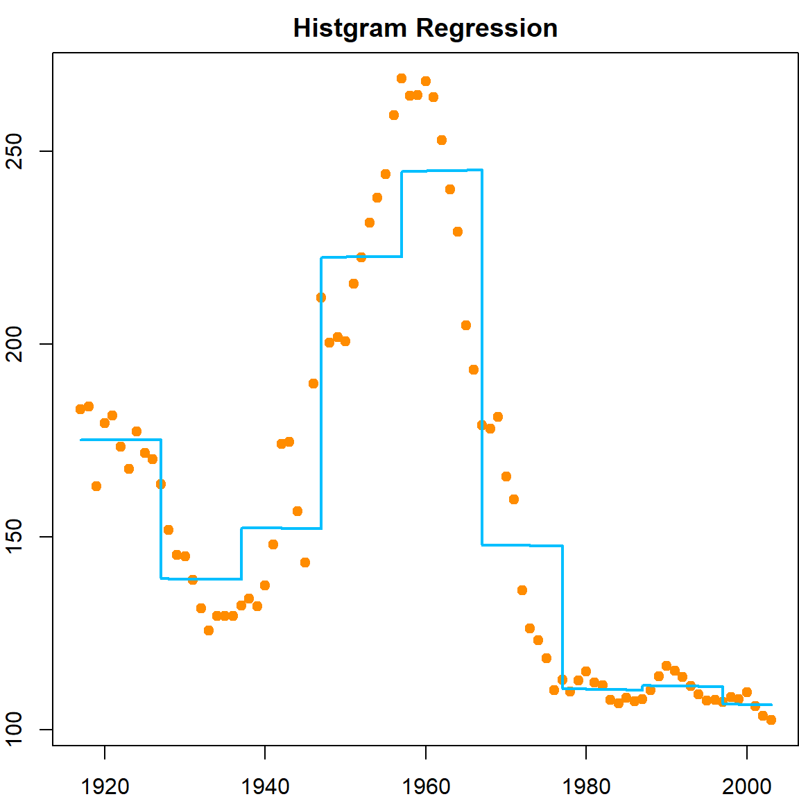
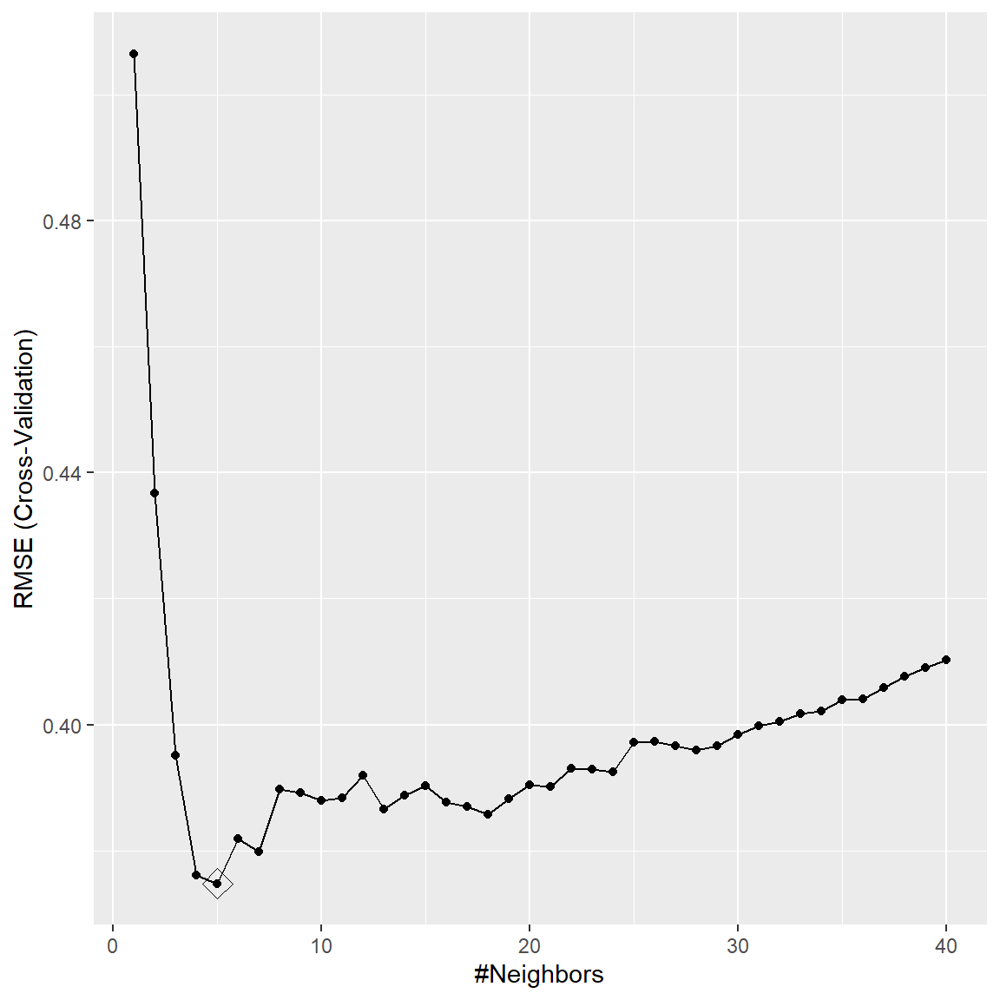
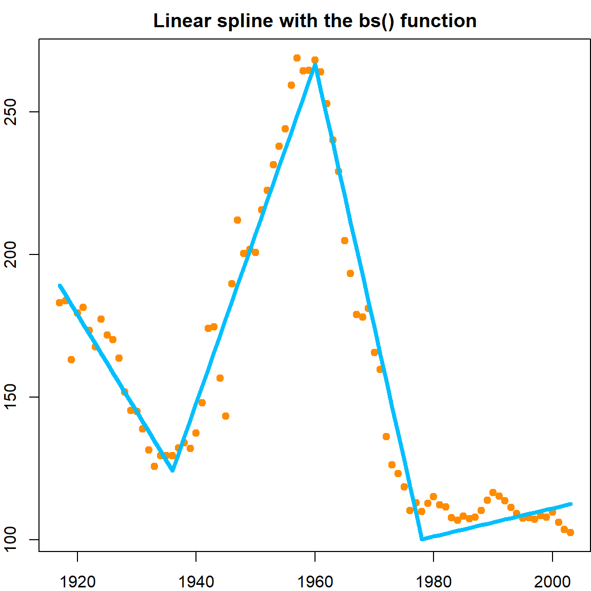
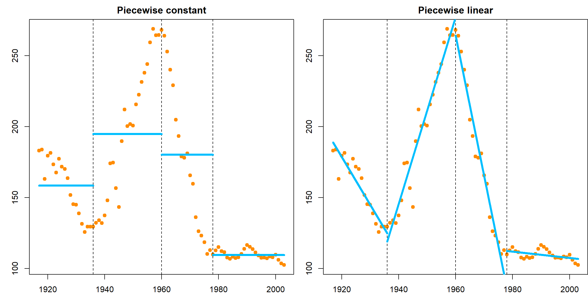
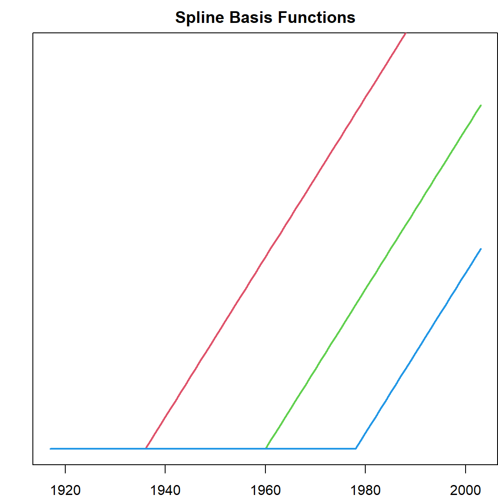
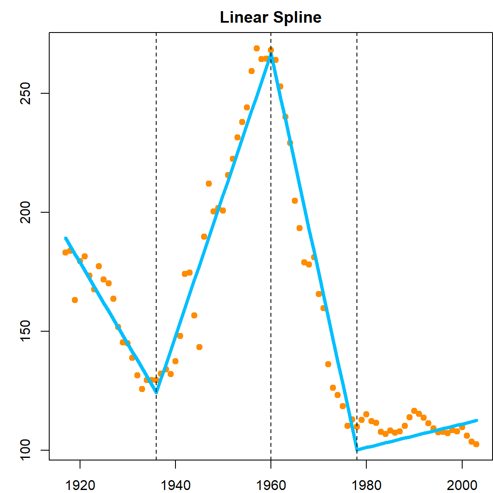

Chapter 8 Spline
8.1 From Linear to Nonlinear
In previous chapters, we mainly focused linear models. Modeling nonlinear trends can still be done with linear model by introducing higher-order terms, or nonlinear transformations. For example, \(x^2\), \(\log(x)\) are all very commonly used approaches to model nonlinear effects. There is another class of approaches that is more flexible with nice theoretical properties, the splines. In this chapter, we mainly focus on univariate regression problems.
8.2 A Motivating Example and Polynomials
We use the U.S. birth rate data as an example. The data records birth rates from 1917 to 2003. The birth rate trend is obviously very nonlinear.
birthrates= read.csv("data/birthrate2.csv", row.names = 1)
head(birthrates)
## Year Birthrate
## 1 1917 183.1
## 2 1918 183.9
## 3 1919 163.1
## 4 1920 179.5
## 5 1921 181.4
## 6 1922 173.4
par(mar = c(4,4,1,1))
plot(birthrates, pch = 19, col = "darkorange")
It might be interesting to fit a linear regression with high order polynomials to approximate this curve. This can be carried out using the poly() function, which calculates all polynomials up to a certain power. Please note that this is a more stable method compared with writing out the powers such as I(Year^2), I(Year^3) etc because the Year variable is very large, and is numerically unstable.
par(mfrow=c(1,2))
par(mar = c(2,3,2,0))
lmfit <- lm(Birthrate ~ poly(Year, 3), data = birthrates)
plot(birthrates, pch = 19, col = "darkorange")
lines(birthrates$Year, lmfit$fitted.values, lty = 1, col = "deepskyblue", lwd = 2)
title("degree = 3")
par(mar = c(2,3,2,0))
lmfit <- lm(Birthrate ~ poly(Year, 5), data = birthrates)
plot(birthrates, pch = 19, col = "darkorange")
lines(birthrates$Year, lmfit$fitted.values, lty = 1, col = "deepskyblue", lwd = 2)
title("degree = 5")
These fittings do not seem to perform very well. How about we take a different approach to model the curve locally. Well, we know there is an approach that works in a similar way – \(k\)NN. But we will try something new. Let’s first divide the year range into several non-overlapping intervals, say, every 10 years. Then we will estimate the regression coefficients within each interval by averaging the observations, just like \(k\)NN. The only difference is that for prediction, we do not recalculate the neighbors anymore, just check the intervals.
par(mfrow=c(1,1))
par(mar = c(2,2,2,0))
mybasis = matrix(NA, nrow(birthrates), 8)
for (l in 1:8)
mybasis[, l] = birthrates$Year*(birthrates$Year >= 1917 + l*10)
lmfit <- lm(birthrates$Birthrate ~ ., data = data.frame(mybasis))
plot(birthrates, pch = 19, col = "darkorange")
lines(birthrates$Year, lmfit$fitted.values, lty = 1, type = "s", col = "deepskyblue", lwd = 2)
title("Histgram Regression")
The method is called a histogram regression. Suppose the interval that contains a given testing point \(x\) is \(\phi(x)\), then, we are fitting a model with
\[\widehat{f}(x) = \frac{\sum_{i=1}^n Y_i \,\, I\{X_i \in \phi(x)\} }{ \sum_{i=1}^n I\{X_i \in \phi(x)\}}\]
You may know the word histogram from the plotting the density of a set of observations. Yes, these two are actually motivated by the same philosophy. We will discuss the connection later on. For the purpose of fitting a regression function, the histogram regression does not seem to perform ideally since there will be jumps at the edge of an interval. Hence we need a more flexible framework.
8.3 Piecewise Polynomials
Instead of fitting constant functions within each interval (between two knots), we may consider fitting a line. Consider a simpler case, where we just use 3 knots at 1938, 1960, 1978, which gives 4 intervals.
par(mfrow=c(1,2))
myknots = c(1936, 1960, 1978)
bounds = c(1917, myknots, 2003)
# piecewise constant
mybasis = cbind("x_1" = (birthrates$Year < myknots[1]),
"x_2" = (birthrates$Year >= myknots[1])*(birthrates$Year < myknots[2]),
"x_3" = (birthrates$Year >= myknots[2])*(birthrates$Year < myknots[3]),
"x_4" = (birthrates$Year >= myknots[3]))
lmfit <- lm(birthrates$Birthrate ~ . -1, data = data.frame(mybasis))
par(mar = c(2,3,2,0))
plot(birthrates, pch = 19, col = "darkorange")
abline(v = myknots, lty = 2)
title("Piecewise constant")
for (k in 1:4)
points(c(bounds[k], bounds[k+1]), rep(lmfit$coefficients[k], 2), type = "l",
lty = 1, col = "deepskyblue", lwd = 4)
# piecewise linear
mybasis = cbind("x_1" = (birthrates$Year < myknots[1]),
"x_2" = (birthrates$Year >= myknots[1])*(birthrates$Year < myknots[2]),
"x_3" = (birthrates$Year >= myknots[2])*(birthrates$Year < myknots[3]),
"x_4" = (birthrates$Year >= myknots[3]),
"x_11" = birthrates$Year*(birthrates$Year < myknots[1]),
"x_21" = birthrates$Year*(birthrates$Year >= myknots[1])*(birthrates$Year < myknots[2]),
"x_31" = birthrates$Year*(birthrates$Year >= myknots[2])*(birthrates$Year < myknots[3]),
"x_41" = birthrates$Year*(birthrates$Year >= myknots[3]))
lmfit <- lm(birthrates$Birthrate ~ .-1, data = data.frame(mybasis))
par(mar = c(2,3,2,0))
plot(birthrates, pch = 19, col = "darkorange")
abline(v = myknots, lty = 2)
title("Piecewise linear")
for (k in 1:4)
points(c(bounds[k], bounds[k+1]),
lmfit$coefficients[k] + c(bounds[k], bounds[k+1])*lmfit$coefficients[k+4],
type = "l", lty = 1, col = "deepskyblue", lwd = 4)
8.4 Splines
However, these functions are not continuous. Hence we use a trick to construct continuous basis:
par(mfrow=c(1,1))
pos <- function(x) x*(x>0)
mybasis = cbind("int" = 1, "x_1" = birthrates$Year,
"x_2" = pos(birthrates$Year - myknots[1]),
"x_3" = pos(birthrates$Year - myknots[2]),
"x_4" = pos(birthrates$Year - myknots[3]))
par(mar = c(2,2,2,0))
matplot(birthrates$Year, mybasis[, -1], type = "l", lty = 1,
yaxt = 'n', ylim = c(0, 50), lwd = 2)
title("Spline Basis Functions")
With this definition, any fitted model will be
- Continuous everywhere
- Linear everywhere except the knots
- Has a different slot for each region
The resulted model is called a spline.
lmfit <- lm(birthrates$Birthrate ~ .-1, data = data.frame(mybasis))
par(mar = c(2,3,2,0))
plot(birthrates, pch = 19, col = "darkorange")
lines(birthrates$Year, lmfit$fitted.values, lty = 1, col = "deepskyblue", lwd = 4)
abline(v = myknots, lty = 2)
title("Linear Spline")
Of course, writing this out explicitly is very tedious, hence we have the bs function in the splines package to help us.
par(mar = c(2,2,2,0))
lmfit <- lm(Birthrate ~ splines::bs(Year, degree = 1, knots = myknots), data = birthrates)
plot(birthrates, pch = 19, col = "darkorange")
lines(birthrates$Year, lmfit$fitted.values, lty = 1, col = "deepskyblue", lwd = 4)
title("Linear spline with the bs() function")
The next step is to increase the degree to account for more complicated functions. A few things we need to consider here:
- How many knots should be used
- Where to place the knots
- What is the degree of functions in each region
For example, we consider this setting
par(mar = c(2,2,2,0))
lmfit <- lm(Birthrate ~ splines::bs(Year, degree = 3, knots = myknots), data = birthrates)
plot(birthrates, pch = 19, col = "darkorange")
lines(birthrates$Year, lmfit$fitted.values, lty = 1, col = "deepskyblue", lwd = 4)
title("Cubic spline with 3 knots")All of them affects the performance. In particular, the number of knots and the number of degrees in each region will determine the total number of degrees of freedom. For simplicity, we can control that using the df parameter. We use a total of 6 parameters, chosen by the function automatically. However, this does not seems to perform better than the knots we implemented. The choice of knots can be crucial.
par(mar = c(2,2,2,0))
lmfit <- lm(Birthrate ~ splines::bs(Year, df = 5), data = birthrates)
plot(birthrates, pch = 19, col = "darkorange")
lines(birthrates$Year, lmfit$fitted.values, lty = 1, col = "deepskyblue", lwd = 4)
title("Linear spline with 6 degrees of parameters")8.5 Spline Basis
There are different ways to construct spline basis. We used two techniques previously, the regression spline and basis spline (B-spline). The B-spline has slight more advantages computationally. Here is a comparision of B-spline with different degrees.
par(mfrow = c(4, 1), mar = c(0, 0, 2, 0))
for (d in 0:3)
{
bs_d = splines2::bSpline(1:100, degree = d, knots = seq(10, 90, 10), intercept = TRUE)
matplot(1:100, bs_d, type = ifelse(d == 0, "s", "l"), lty = 1, ylab = "spline",
xaxt = 'n', yaxt = 'n', ylim = c(-0.05, 1.05), lwd = 2)
title(paste("degree =", d))
}
8.6 Natural Cubic Spline
Extrapolations are generally dangerous because the functions could be extream outside the range of the observed data. In linear models fit by bs(), extrapolations outside the boundaries will trigger a warning.
par(mfrow=c(1,1))
library(splines)
fit.bs = lm(Birthrate ~ bs(Year, df=6), data=birthrates)
plot(birthrates$Year, birthrates$Birthrate, ylim=c(0,280), pch = 19,
xlim = c(1900, 2020), xlab = "year", ylab = "rate", col = "darkorange")
lines(seq(1900, 2020), predict(fit.bs, data.frame("Year"= seq(1900, 2020))),
col="deepskyblue", lty=1, lwd = 3)
## Warning in bs(Year, degree = 3L, knots = c(`25%` = 1938.5, `50%` = 1960, : some 'x' values beyond
## boundary knots may cause ill-conditioned bases
fit.ns = lm(Birthrate ~ ns(Year, df=6), data=birthrates)
lines(seq(1900, 2020), predict(fit.ns, data.frame("Year"= seq(1900, 2020))),
col="darkgreen", lty=1, lwd = 3)
legend("topright", c("Cubic B-Spline", "Natural Cubic Spline"),
col = c("deepskyblue", "darkgreen"), lty = 1, lwd = 3, cex = 1.2)
title("Birth rate extrapolation")Hence this motivates us to consider setting additional constrains that forces the extrapolations to be come more regular. This is done by forcing the second and third derivatives to be 0 if beyond the two extreme knots.
par(mar = c(0, 2, 2, 0))
ncs = ns(1:100, df = 6, intercept = TRUE)
matplot(1:100, ncs, type = "l", lty = 1, ylab = "spline",
xaxt = 'n', yaxt = 'n', lwd = 3)
title("Natural Cubic Spline")
8.7 Smoothing Spline
The motivation is to trying to solve the knots selection issue. Instead, let’s start with a “horrible” idea, by putting knots at all each observed data point \((x_1, x_2, \ldots, x_n)\). Then, we can create \(n\) natural cubic spline basis. However, we also know that this leads to over-fitting since there are too many parameters. Let’s utilize the ridge regression idea by adding some penalties. This leads to the objective function
\[\begin{equation} \underset{\boldsymbol \beta}{\text{min}} \,\, \lVert \mathbf{y}- \mathbf{F}\boldsymbol \beta\rVert^2 + \lambda \boldsymbol \beta^\text{T}\Omega \boldsymbol \beta, \tag{8.1} \end{equation}\] where \(\mathbf{F}\) is the matrix of all \(n\) natural cubic spline basis, and \(\Omega\) is some covariance matrix that takes care of some form of relationship among different basis, which we will define later, and \(\lambda\) is similar to the ridge regression. The question is, will this type of regression problem provide a good solution with nice properties?
Let’s consider fitting a regression model by solving a regression function \(g(x)\) with the following penalized criteria:
\[\begin{equation} \frac{1}{n} \sum_{i=1}^n \big(y_i - g(x_i)\big)^2 + \lambda \int_a^b \big[g''(x) \big]^2 dx. \tag{8.2} \end{equation}\]
This is the sum of \(\ell_2\) loss and a roughness penalty that enforce certain smoothness on \(g(x)\). And we shall show that the optimal \(g(x)\) that minimize this objective function will take the ridge penalty form in (8.1) mentioned previously.
We will consider all absolutely continuous functions on \([a, b] = [\min(x_i), \max(x_i)]\), with finite roughness, i.e., \(\int_a^b \big[g''(x) \big]^2 dx < \infty\). This is known as the second order Sobolev space. Let’s first define \(g(\cdot)\) as the optimal solution to Equation (8.2). Since the loss part in (8.2) only involves \(n\) data points, we can find define a natural cubic spline (NCS) fit \(\tilde{g}(\cdot)\) such that it matches with \(g(\cdot)\) on all the observed data, i.e.,
\[g(x_i) = \widetilde{g}(x_i), \quad i = 1, \ldots, n.\]
Note that the roughness of NCS fit \(\widetilde{g}\) is also finite, hence \(\widetilde{g}\) is within the space of functions we are considering. Also, such matching on all observed data points is doable when we have \(n\) basis in the natural cubic spline. In this case, the loss corresponds to \(\tilde{g}\) and \(g\) are identical. Hence, it only matters if the penalty part of \(\tilde{g}(\cdot)\) is the same. To analyze this, we define the difference between these two functions as
\[h(x) = g(x) - \tilde{g}(x).\] It is then obvious that \(h(x_i) = 0\) for all observed \(i\). Then we have
\[\int g''^2 dx = \int \widetilde{g}''^2 dx + \int h''^2 dx + 2 \int \widetilde{g}'' h'' dx\] The first and second term on the right hand side are both non-negative. Hence, only the third term matters. WLOG, we assume that \(x_i\)’s are ordered from the smallest to the largest. Then
\[\begin{align} \int \tilde{g}'' h'' dx =& ~\tilde{g}'' h' \Big|_a^b - \int_a^b h' \tilde{g}^{(3)} dx \nonumber \\ =&~ 0 - \int_a^b h' \tilde{g}^{(3)} dx \nonumber \\ =&~ - \sum_{i=1}^{n-1} \tilde{g}^{(3)}(x_j^+) \int_{x_j}^{x_{j+1}} h' dx \quad \nonumber \\ =&~ - \sum_{i=1}^{n-1} \tilde{g}^{(3)}(x_j^+) \big(h(x_{j+1}) - h(x_j)\big) \nonumber \\ =&~ 0 \end{align}\]
The second equation is because \(\tilde{g}\) is a NCS and suppose to have 0 second derivative on the two boundaries \(a\) and \(b\). The third equation is because \(\tilde{g}\) is at most \(x^3\) on any regions and have constant third derivatives, which we can pull out of the integration. And the last equation is because \(h(x) = 0\) on all \(x_i\)’s.
Hence, this shows that the roughness penalty \[\int \widetilde{g}''^2 dx\] of our NCS solution is no larger than the best solution \(g\). Noticing that \(\widetilde{g}\) is also with the space of functions we are considering, then \(g\) must be our NCS solution.
Hence, \(g\) has a finite sample representation
\[\widehat g(x) = \sum_{j=1}^n \beta_j N_j(x)\]
where \(N_j\)’s are a set of natural cubic spline basis functions with knots at each of the unique \(x\) values. Then Equation (8.2) becomes
\[\begin{align} & \lVert \mathbf{y}- \sum_{j=1}^n \beta_j N_j(x) \rVert^2 + \int \Big( \sum_{j=1}^n \beta_j N_j''(x)\Big)^2 dx \\ =& \lVert \mathbf{y}- \mathbf{F}\boldsymbol \beta\rVert^2 + \boldsymbol \beta^\text{T}\Omega \boldsymbol \beta, \end{align}\]
where \(\mathbf{F}\) is the design matrix corresponds to the \(n\) NCS basis \(N_j\)’s, and \(\Omega\) is an \(n \times n\) matrix with \(\Omega_{ij} = \int N_i''(x) N_j(x) dx.\) The solution is essentially a ridge solution:
\[\widehat{\boldsymbol \beta} = (\mathbf{F}^\text{T}\mathbf{F}+ \lambda \Omega)^{-1} \mathbf{F}^\text{T}\mathbf{y}.\] and the penalty \(\lambda\) can be tuned using GCV.
8.8 Fitting Smoothing Splines
Fitting a smoothing spline can be done by using the smooth.spline package. However, since the birthrate data has little variation in adjacent years, over-fitting is quite severe. The function will automatically use GCV to tune the parameter.
# smoothing spline
fit = smooth.spline(birthrates$Year, birthrates$Birthrate)
plot(birthrates$Year, birthrates$Birthrate, pch = 19,
xlab = "Year", ylab = "BirthRates", col = "darkorange")
lines(seq(1917, 2003), predict(fit, seq(1917, 2003))$y, col="deepskyblue", lty=1, lwd = 3)
# the degrees of freedom is very large
fit$df
## [1] 60.7691Let’s look at another simulation example, where this method performs resonabaly well.
set.seed(1)
n = 100
x = seq(0, 1, length.out = n)
y = sin(12*(x+0.2))/(x+0.2) + rnorm(n)
# fit smoothing spline
fit = smooth.spline(x, y)
# the degrees of freedom
fit$df
## [1] 9.96443
# fitted model
plot(x, y, pch = 19, xlim = c(0, 1), xlab = "x", ylab = "y", col = "darkorange")
lines(x, sin(12*(x+0.2))/(x+0.2), col="red", lty=1, lwd = 3)
lines(x, predict(fit, x)$y, col="deepskyblue", lty=1, lwd = 3)
legend("bottomright", c("Truth", "Smoothing Splines"),
col = c("red", "deepskyblue"), lty = 1, lwd = 3, cex = 1.2)
8.9 Extending Splines to Multiple Varibles
Since all spline approaches can be transformed into some kind of linear model, if we postulate an additive structure, we can fit a multivariate model with
\[f(x) = \sum_j h_j(x_j) = \sum_j \sum_k N_{jk}(x_j) \beta_{jk}\]
where \(h_j(x_j)\) is a univariate function for \(x_j\) that can be approximated by splines basis \(N_{jk}(\cdot), k = 1, \ldots, K\). This works for both linear regression and generalized linear regressions. For the South Africa Heart Disease data, we use the gam() function in the gam (generalized additive models) package. We compute a logistic regression model using natural splines (note famhist is included as a factor).
library(ElemStatLearn)
library(gam)
## Loading required package: foreach
## Loaded gam 1.20
form = formula("chd ~ ns(sbp,df=4) + ns(tobacco,df=4) +
ns(ldl,df=4) + famhist + ns(obesity,df=4) +
ns(alcohol,df=4) + ns(age,df=4)")
# note that we can also do
# m = glm(form, data=SAheart, family=binomial)
# print(summary(m), digits=3)
# however, the gam function provides more information
m = gam(form, data=SAheart, family=binomial)
summary(m)
##
## Call: gam(formula = form, family = binomial, data = SAheart)
## Deviance Residuals:
## Min 1Q Median 3Q Max
## -1.7245 -0.8265 -0.3884 0.8870 2.9589
##
## (Dispersion Parameter for binomial family taken to be 1)
##
## Null Deviance: 596.1084 on 461 degrees of freedom
## Residual Deviance: 457.6318 on 436 degrees of freedom
## AIC: 509.6318
##
## Number of Local Scoring Iterations: 6
##
## Anova for Parametric Effects
## Df Sum Sq Mean Sq F value Pr(>F)
## ns(sbp, df = 4) 4 6.31 1.5783 1.4242 0.224956
## ns(tobacco, df = 4) 4 18.09 4.5218 4.0802 0.002941 **
## ns(ldl, df = 4) 4 12.05 3.0137 2.7194 0.029290 *
## famhist 1 19.70 19.7029 17.7788 3.019e-05 ***
## ns(obesity, df = 4) 4 3.66 0.9161 0.8266 0.508701
## ns(alcohol, df = 4) 4 1.28 0.3200 0.2887 0.885278
## ns(age, df = 4) 4 17.64 4.4100 3.9794 0.003496 **
## Residuals 436 483.19 1.1082
## ---
## Signif. codes: 0 '***' 0.001 '**' 0.01 '*' 0.05 '.' 0.1 ' ' 1
par(mfrow = c(3, 3), mar = c(5, 5, 2, 0))
plot(m, se = TRUE, residuals = TRUE, pch = 19, col = "darkorange")